Advanced Security
PHP Register/Login System
- created: 08/02/2013
- latest update: 05/03/2014
- by: Milos Stojanovic
What Is Advanced Security?
Advanced Security is Register/Login and User Management System with high security, developed using pure PHP and MySQL database.
Lets say you have your own website and you want to extend it by adding user registration and login system. Insted of coding for few days and thinking about all security holes, you can just take this system, install it, and your work is done.
Just add two lines of code on top of your old pages to allow only registred users to access them and that's it.
Advanced Security classes offer you a lot of built in methods, and you can add your own if you want.
Security
SQL Injection
Advanced Security System has own database class that extends PDO and use prepared statements to prevent SQL Injection attacks.
Session Security
Your session cookies are very important while you are logged in. If someone still you a session cookie, he can log in and do whatever he wants, logged in like you!
Advanced Security creates secure, HTTP only cookies, whitch can't be accessed via JavaScript and session Id will be regenerated every time (if you selected that option during installation process).
Also, there is an option to enable "login fingerprint". This basically means that every time you log in. hash of your IP address and name of browser you are using are stored inside $_SESSION variable, and if someone somehow steal your session cookie, this will protect you.
CSRF protection is also included. That means that forms can only be submited from your website, so you don't have to worry if someone will spam your website or perform some malicios actons.
Password Encryption
Password encryption is, of course, very important factor.
Advanced Security System encrypts your password twice.
Password is encrypted on client side using Javascript before it is event sent through the network, so you don't have to worry if you don't have HTTPS (but, to improve your security, it's recommended that you get HTTPS).
Password is encrypted on server side with encryption method you have selected during the installation process.
Available encryption methods are Bcrypt with selected cost (using salt of course) and SHA-512 with salt and thousands of iterations.
Salt is random generated string during the registration process.
Brute Force Attack
System prevents brute force attacks too by blocking user IP address for one day, if there are specific number of invalid login attempts. You can set number of login attempts during installation wizard.
Installation
Extract and upload downloaded zip file
Create database
Start installation wizard
Logging In
Right after installation, you are available to log in as administrator:
username: admin
password: admin123
Of course, every registred user can login after successful registration.
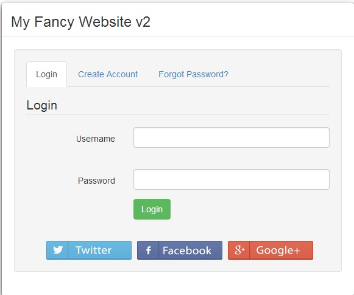
During registration process you are available to select the page where user will be redirected after successfull login. By default it is set to index.php. You can update this setting inside configuration file by changing the value of SUCCESS_LOGIN_REDIRECT constant.
Registration
Users can register on your system by clicking on "Create Account" tab and fill the registration form.
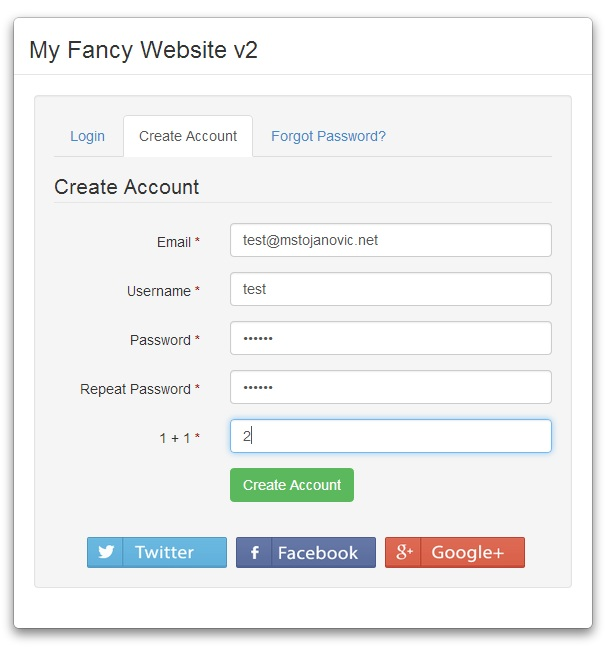
If there are some errors, or email/username is already in use, user will get appropriate messages.
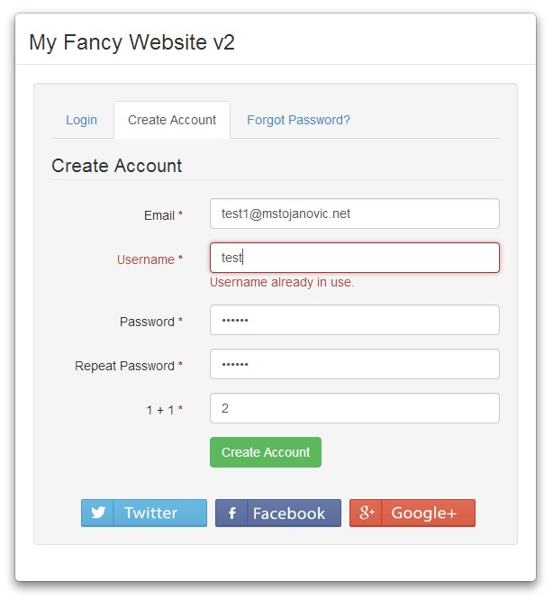
During installation process, you are available to select whether the user will be automatically confirmed or he will receive confirmation email in order to confirm that his email is valid. Of course, you can update this setting inside configuration file (ASEngine/ASConfig.php) that is created after successfull registration by updating value of MAIL_CONFIRMATION_REQUIRED constant.
Password Reset
If you have forgot your password, just select "Forgot password?" tab and enter your email address.
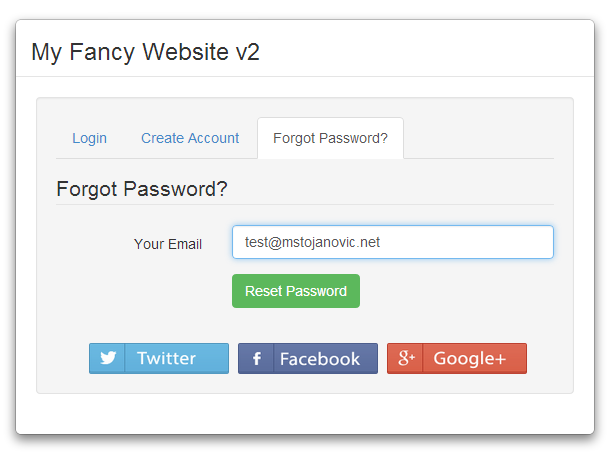
The system will send you password reset email which contain password reset link.
If you click on that link, you will get to password reset page
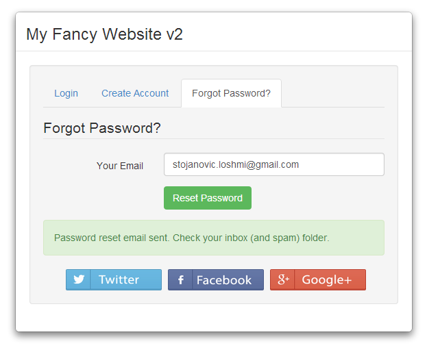
Enter new password and click "Reset Password"
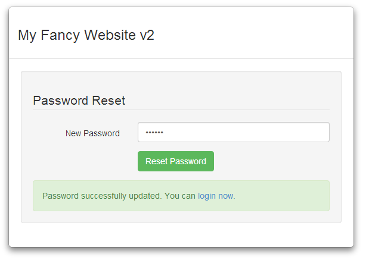
Now you can go to login page and log in with new password.
Post Comments
Posting comments is actually an demonstration how Advanced Security System can be used in some real situations.
If your user role is set to user (this is default value when new user successfully complete registration process), you won't be available to post comments.
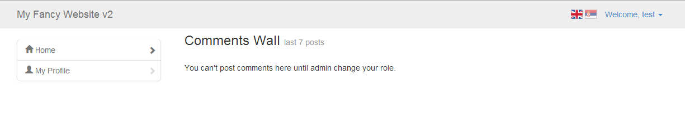
If your user role is set to editor or you are adminstrator, you are available to post comments by entering comment text and clicking comment button.
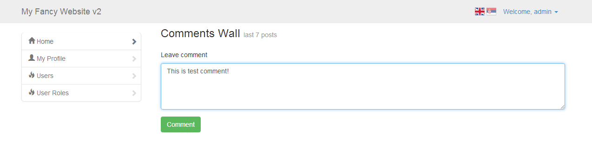
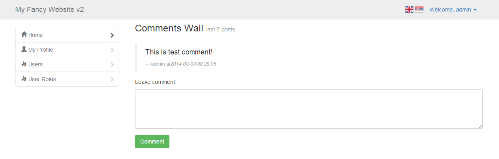
Change Password
When you are logged in, you are available to change your password.
You can do this by clicking on My Profile in navigation menu to the left.
In order to update your password, you need to enter your old password and then enter new password twice
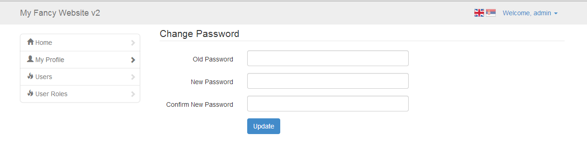
Now click Update button to update your password.
Update Details
In order to update your password, go to My Profile page, enter details you want to update, and click Update button.
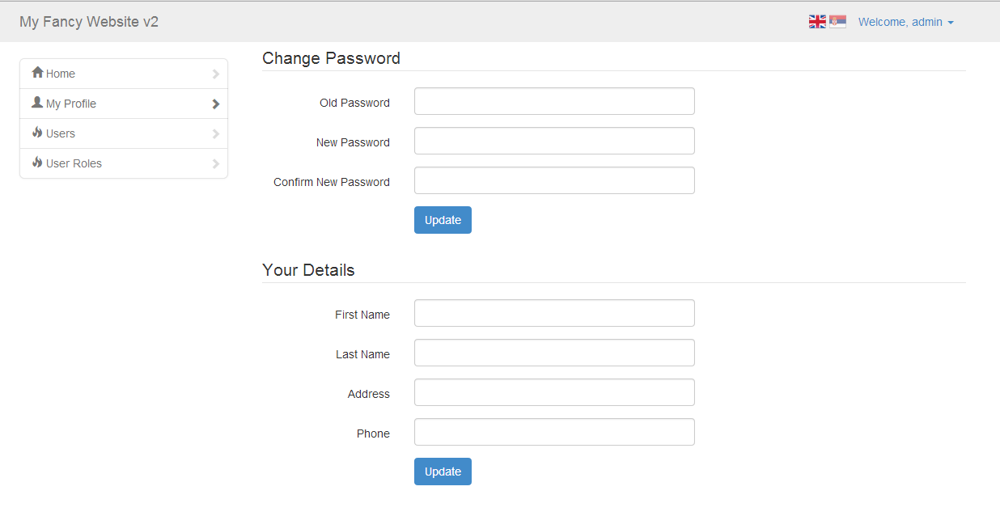
User Management
If you are logged in as Administrator, you are available to manage registred website users.
To do this, go to Users page.
There are 3 type of users( 3 different user roles) by default:
- Admin
- Editor
- User
For every user displayed in user table, there is one blue button in Action column. Depending on user's role, text on blue button can be User, Editor or any new role added by admin. Admin users won't be displayed there since there can be only one admin.
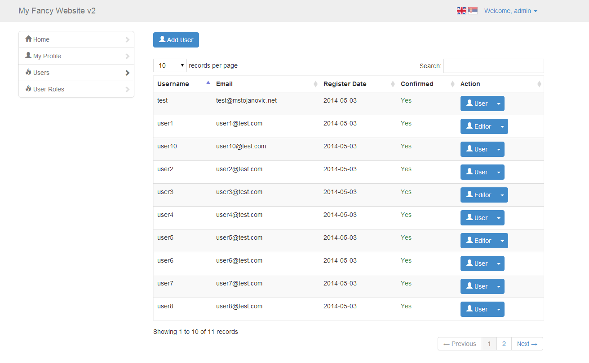
Adding New User
As administrator, you can add new users manually. To do that, just click "Add User" button located above users table and fill required info.
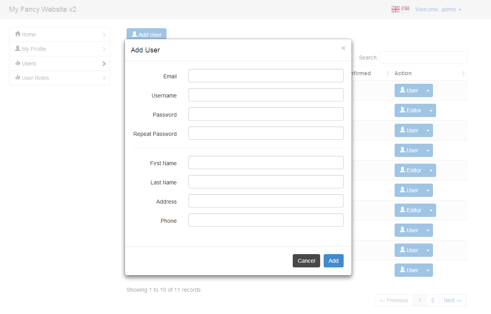
Editing User Details
You can edit existing users buy clicing small caret to the right of the blue button and select "Edit".
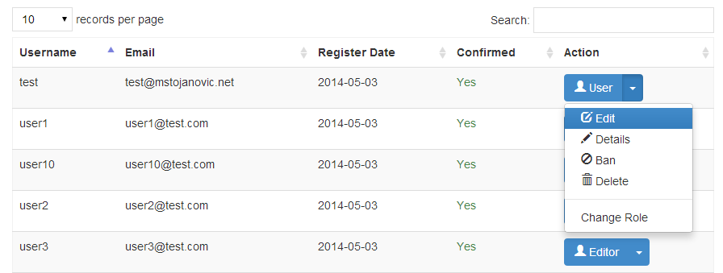
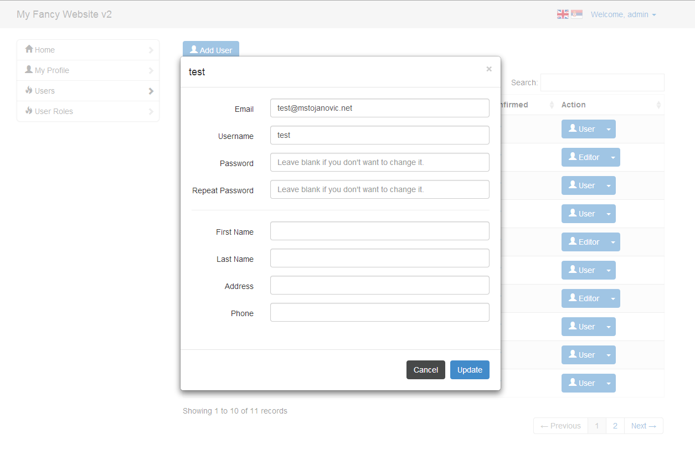
Display User Details
If you want only to view user details, without editing them, you can get all details for every registred user by clicking small caret to the right of the blue button, and selecting Details option from dropdown menu.
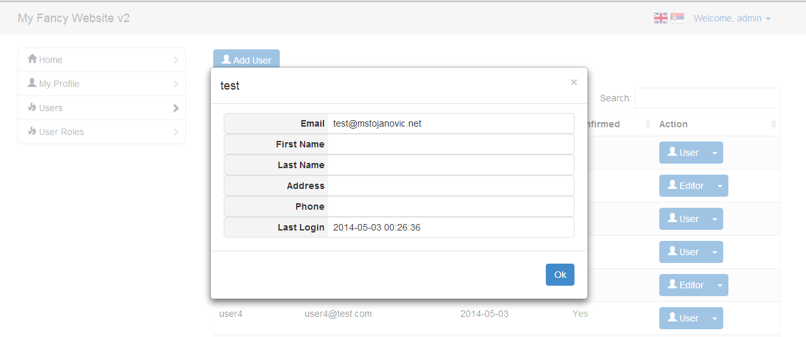
Ban User
If you want to keep user in database but make his account unfunctional, you can simply ban that user by selecting Ban option from dropdown menu. All banned users have their button inside Action column painted in red.
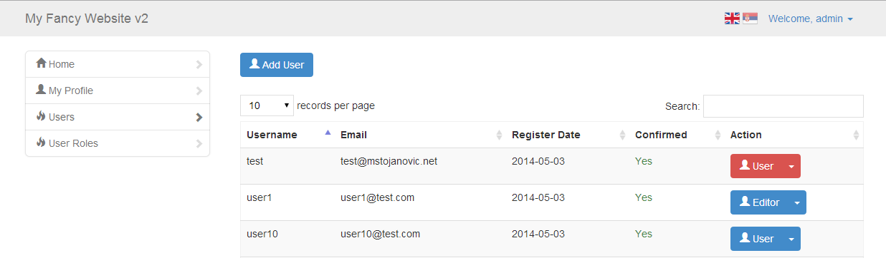
Delete User
You can delete specific user by clicking small caret to the right of the blue button, and selecting Delete option from dropdown menu.
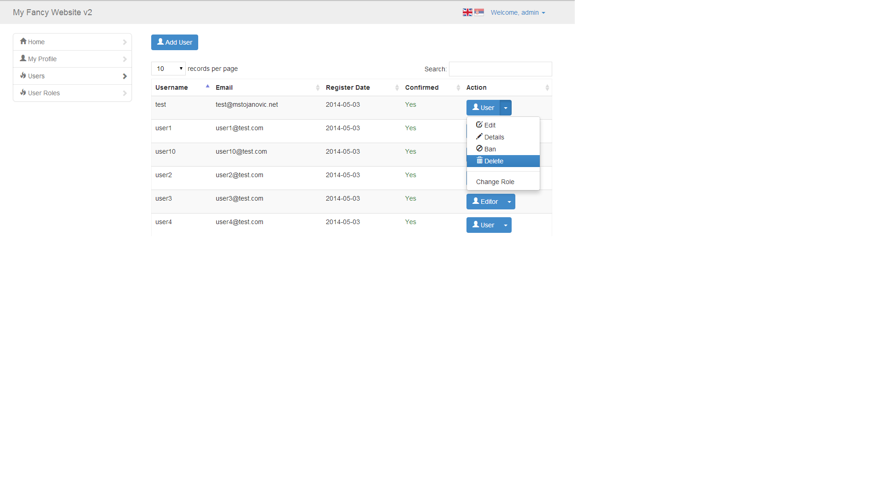
Change User Role
User role can be changed to any available user role (default or added user roles)
You can change user's role by clicking small caret to the right of the blue button, and selecting Change User Role.
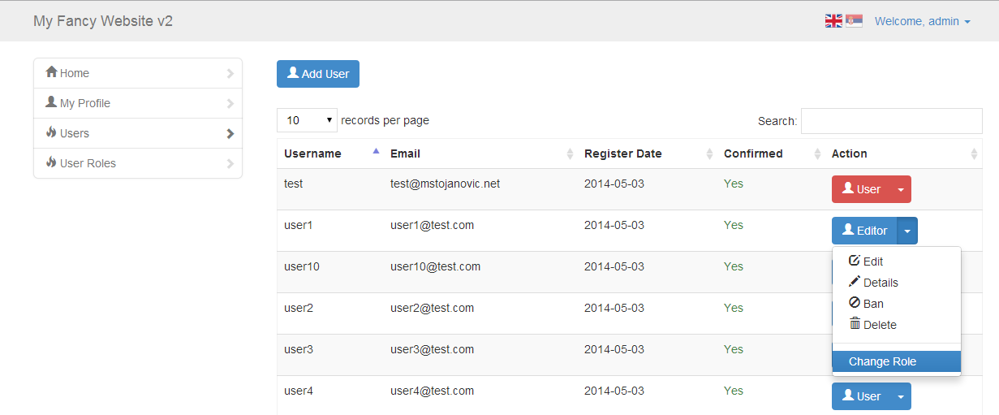
After that, just select user role from dropdown list and click Ok.
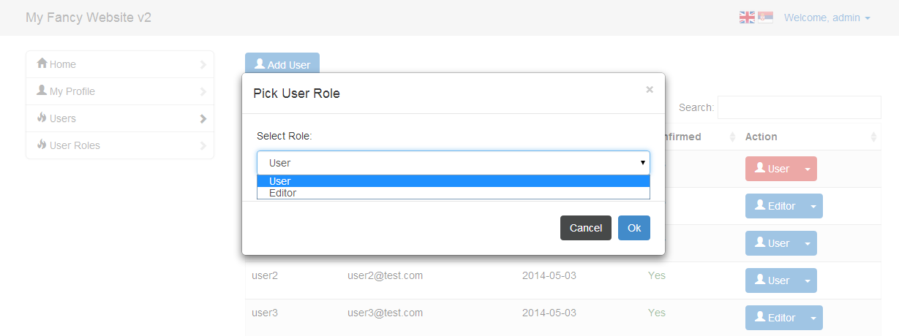
Searching and Sorting Users
You can search through all users by typing words inside search box located above userse table. Users will be automatically filtered and displayed.
You are available to sort all columns of users table by clicking to column header and to paginete through table records using pagination located below users table.
Add/Delete User Roles
If you want to manage user roles, just select User Roles from navigation menu.
To add new role, simply enter new role name and click Add. New role will be automatically added.
It's recommended to use one word role because it will be easiery for you to check user role in code.
However, every role name will be converted to lower case.
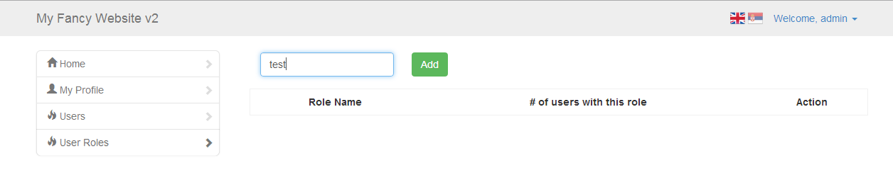
To delete role, just click delete button next to user role you want to delete.
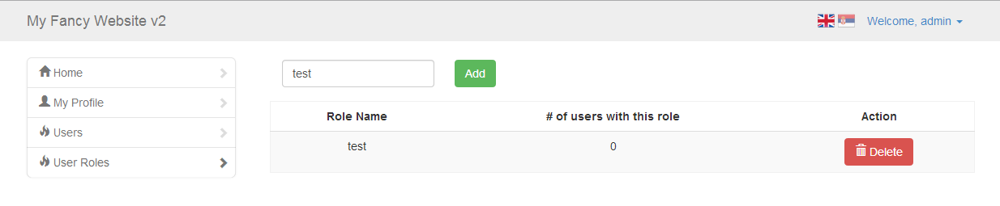
If there are users that already have this user role, they will be returned back to User role.
Language
You are available to change user interface language by clicking flag icons located in top right corner (login/register page) and inside right header area (any other page).
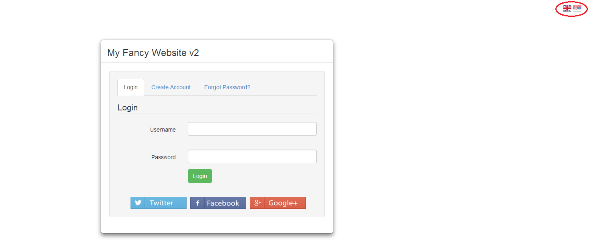
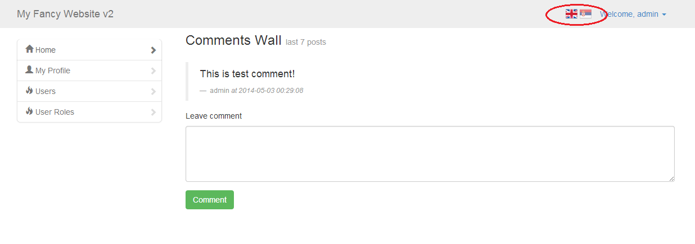
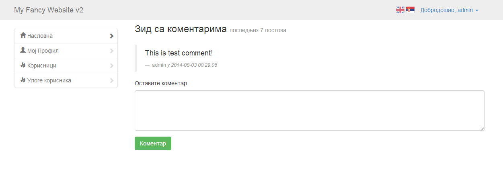
By default, there are two languages available: English and Serbian (cyrillic).
By chaning interface language, all error messages and validation are translated too.
Adding New Language
If you want to add new language, all you need to do is to make copy of existing language file (en.php for example) located inside Lang directory, rename it to ru.php for example, and translate it. Of course, since this translation file is organized as php array, you only translate those values to the right of => sign.
Next step you need to do is to add new flag (or organize it however you want), and create an link that will point to ?lang=ru, and that's it. 
Example:
<a href="?lang=ru">Russian</a>
Additional Configuration
During the installation process, Installation Wizard automatically creates configuration file called ASConfig.php and store it into ASEngine folder.
If you want to configure it manually after installation, you can do it by editing ASConfig.php.
Updating Validation Messages
All validation messages are inside language files. So, if you want to update validation messages for english language, you need to edit Lang/eng.php file and update validation message that are located in '// validation messages' section.
Changing Bootstrap Version
If you want to change Bootstrap version after installation, you can do it by editing ASConfig.php and changing following line
define('BOOTSTRAP_VERSION', your_bootstrap_version_here);
So, for Bootstrap 2.3.2, it will be
define('BOOTSTRAP_VERSION', 2);
and for Bootstrap 3
define('BOOTSTRAP_VERSION', 3);
Changing Default Interface Language
By default, if you have never changed/updated interface language, it is set to english. However, you can change that in ASConfig.php by updating DEFAULT_LANGUAGE constant.
So, if you want to set default language to Serbian (cyrillic), you need to update this constant to rs:
define('DEFAULT_LANGUAGE', 'rs');
Using The Engine
If you want to create new files for your website, and I'm sure you will, or to allow some old website pages to be accessible only by registred users, you need to add those two lines of code:
include "ASEngine/AS.php";
if(!$login->isLoggedIn()) header("Location: login.php");
Explanation:
File AS.php includes all required classes, starts new session and creates 3 new objects as follows
$login = new ASLogin(); $register = new ASRegister(); $mailer = new ASEmail();
Those objects now can be used on every page where AS.php is included.
This line of code says: "If user is not logged in, redirect him to login page."
if(!$login->isLoggedIn()) header("Location: login.php");
Session
ASSession::startSession();
ASSession:destroySession();
ASSession::set("something", 5);
$userId = ASSession::get("user_id");
If you want to unset some session item, you can do it by calling destroy method
ASSession::destroy('someething_that_is_set_before');
Working With ASUser Class
If user is logged in, his ID is stored inside $_SESSION.
You can get it on standard way:
$userId = $_SESSION['user_id'];
or you can use ASSession class (recommanded)
$userId = ASSession::get('user_id');
Now, when we have user ID, we can do whatever we want with our user.
Create User Object
Simply create new ASUser object and pass $userId as constructor parameter.
$user = new ASUser($userId);
Check If User Is Administrator
If you want to check if user is administrator, just call isAdmin() function on user object
if($user->isAdmin()) echo "This user is administrator!"; else echo "This user is not administrator!";
Get User's Role
$user->getRole();
So, if we want to allow only to Administrator and Ediitor to post comments, we need to add this (used inside index.php):
<?php if($user->getRole() != 'user'): ?>
<div class="leave-comment">
<div class="control-group">
<h5>Leave comment</h5>
<div class="controls">
<textarea id="comment-text"></textarea>
<button class="btn btn-success" id="comment">Comment</button>
</div>
</div>
</div>
<?php else: ?>
<p>You can't post comments here until admin change your role.</p>
<?php endif; ?>
Get User Info
$userInfo = $user->getInfo();
$userInfo will be array containing following informations:
$user_id = $userInfo['user_id']; $email = $userInfo['email']; $username = $userInfo['username']; $password = $userInfo['password'] $confirmation_key = $userInfo['confirmation_key']; $confirmed = $userInfo['confirmed']; $password_reset_key = $userInfo['password_reset_key']; $register_date = $userInfo['register_date']; $user_role = $userInfo['user_role']; $last_login = $userInfo['last_login'];
Update User Info
You can update every user's information by passing it as an array item to updateInfo method.
So, if you want to update user_role and email, you will do this:
$user->updateInfo(array(
"user_role" => $newPassword,
"email" => $newEmail
));
And if you want to update last_login, username and confirmation_key, you will just put it inside an array, and pass it to updateInfo function, like this
$user->updateInfo(array(
"last_login" => $newLastLoginValue,
"username" => $newUsername,
"confirmation_key" => $newConfirmationKey
));
Get User Details
$userDetails = $user->getDetails()
$userDetails will be an array with following fields:
$first_name = $userDetails['first_name']; $last_name = $userDetails['last_name']; $address = $userDetails['address']; $phone = $userDetails['phone'];
Update User Details
Updating user details works the same as updating user info.
So, if you want to update address and phone
$user->updateDetails(array(
"address" => $newAddress,
"phone" => $newPhone
));
Database Queries
Creating Database Connection
$db = ASDatabase::getInstance();
By calling getInstance() method, you will ensure that there is only one instance of ASDatabase created which means that there is only one database connection opened.
SELECT
Just write regular SQL query and use parameters insted of variables (:id is parameter in this case). Second method parameter is bind array. This is an array where key represent name of SQL query parameter (id in this case, without ":") and value for that key should be value you want to replace that parameter inside SQL query:
$result = $db->select(
"SELECT * FROM `as_user_details` WHERE `user_id` = :id",
array ("id" => $userId)
);
$result = $db->select("SELECT * FROM `as_users`");
//result of first query $userDetails = $result[0];
foreach($result as $user) {
echo $user['email'];
echo $user['username'];
}
INSERT
In order to insert something into database, insert method need 2 parameters.
First parameter is table name and second one is array where keys represent names of database columns, and values represent what should be written into that database column.
So, if you want to insert new user into your database, you need to write this:
$db->insert('as_users', array(
"email" => $email,
"username" => $username,
"password" => $password,
"confirmation_key" => $key,
"register_date" => $date
));
UPDATE
Update method needs 4 parameters.
First one is database table that should be updated.
Second one is array where keys are names of columns that should be updated and values are new values for that column.
Third parameter is SQL WHERE query part. Remember that you need to use sql parameters for every variable that you want to pass to the query to prevent SQL Injection.
And fourth parameter is bind array with key => value pair for every sql parameter you have added into sql query.
So, if you want to update user's password, and you have $userId for that user, you can do it like this:
$db->update(
'as_users',
array ( "password" => $newPassword ),
"user_id = :id",
array( "id" => $user_id )
);
"UPDATE `as_users` SET `password` = '$newPassword' WHERE `user_id` = '$user_id'"
DELETE
In order to delete something from database, you need to pass 3 parameters to delete method.
First one is database table name from which you want to delete.
Second is SQL WHERE query part, using parameters.
And third is an array with key => value pair for every sql parameter inside your WHERE query part.
So, if you want to delete all comments posted by user with specific $userId, you need to do the following
$this->delete(
"as_comments",
"posted_by = :id",
array( "id" => $userId )
);
Working With Comments
If you want to work with ASComments class, first you need to create new object of that class
$comment = new ASComment();
Adding New Comment
To insert new comment into database, you need $userId of user who is posting the comment and comment text.
Usually logged user is posting the comment (unless you want to make it different) and his user Id can be found inside $_SESSION variable.
To insert new comment, just call insertComment method and pass two mentioned parameters
$comment->insertComment($userId, $commentText);
Get User's Comments
$comment->getUserComments($userId);
Get Last X Comments
$comment->getComments(); //returns last 7 comments $comment->getComments(20); //returns last 20 comments
Assets
Assets and classes used in this project:
- DataTables - https://datatables.net/
- HybridAuth - http://hybridauth.sourceforge.net/
- PHPMailer - http://phpmailer.worxware.com/
Changelog
Version 2.0
Added social login via Facebook, Twitter and Google+ Administrator can now add new user or edit existing users. Added search for users table Added pagination for users table Added unicode support Added option for updating system language ASDatabase class now implement Singleton design pattern Added option for changing how emails will be sent (php mail or SMTP) Added option to select redirect page after user log in Added option to set life time for password reset token Added option to select if user should confirm his email after registration or not Added option to ban specific user All bugs fixed from previous versions
Version 1.3
CSRF protection included
Version 1.2
Admin is now available to add more user roles
Version 1.1
Added option for selecting password encryption algorithm Added option for selecting version of Twitter Bootstrap Added loading state on Update Password button Added loading state on Update Details button
Social Login
If you want, you can enable social login for your users.
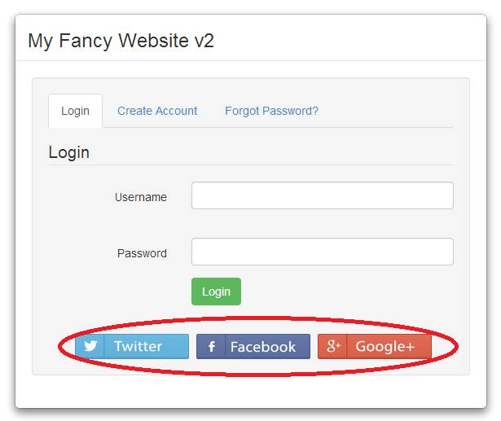
During installation wizard you will be prompted to enable/disable specific provider (options are twitter, facebook and google+).
For every provider you will have to provide additional infomation. Also, if you want, for example, to make facebook login active, you will have to create an fb app by accessing https://developers.facebook.com/ and then create new App that will be used for your application.
The procedure is the same for Twitter and Google+, just link for developer website is different.
After you create that app on Facebook (or Google or Twitter), you will get access to app key and app secret key. Those fields are required in order to make social login to work, and you will be prompted to insert those fields during installation process, if enable some of social login providers.
Of course, those values can be updated later by editing config file generated by installation wizard.